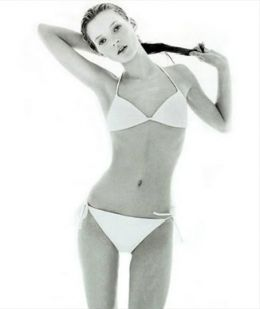

The rise of Kate Moss in the 1990s meant that hers was the celebrated beauty type. Called 'homeless chic' or 'heroin chic', the beauty standards of the nineties meant that women had to be extremely (unhealthily) thin, waifish, androgynous, skeletal, and have translucent skin.
The "low carbs, low fat" diet that we often hear about today is not so new after all. They became extremly trendy in the 90s and during
that period, different types of diet methods including diet pills also became popular among young women.
